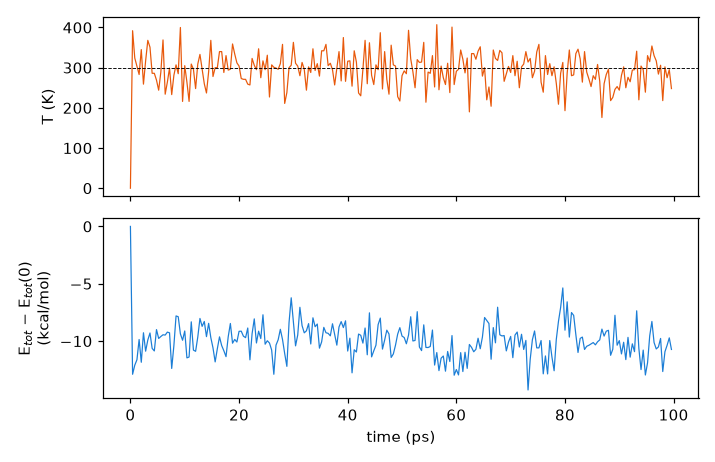
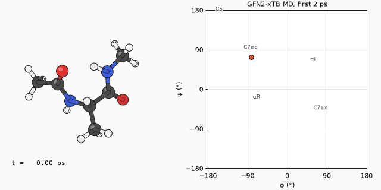
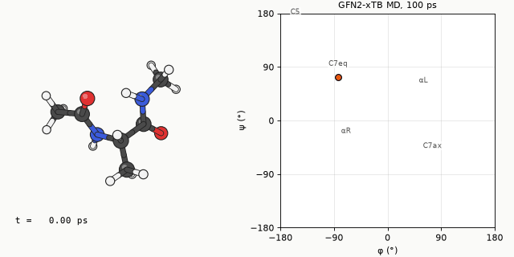
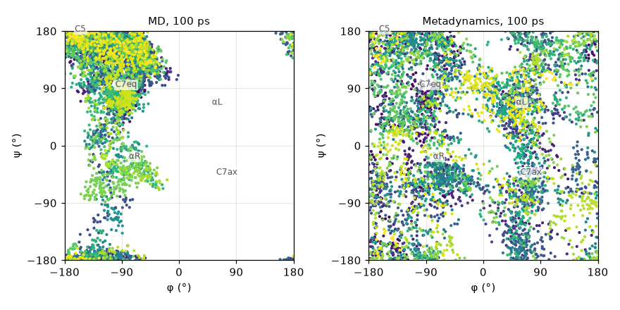

The $md block
MD settings go into a detailed input file passed with --input. This is the file used for the examples in this chapter.
$md
temp=300.0 # target temperature (K)
time=100.0 # total length (ps)
dump=20.0 # coordinate output interval (fs)
step=2.0 # time step (fs)
hmass=4 # hydrogen mass (amu)
shake=1 # constrain X–H bonds only
nvt=true # thermostat on
$end
Note that the units differ between entries: time is in ps, while dump and step are in fs.
SHAKE and hydrogen mass
ORCA MD used 0.5 fs because of X–H stretching. xtb gets around this in two ways: SHAKE fixes X–H bond lengths and removes the fastest vibration, and raising the hydrogen mass from 1 to 4 amu slows the remaining hydrogen motion. Equilibrium properties (which conformers are visited and for how long) do not depend on the masses, so this is fine for conformer sampling.
shake | Constrained bonds | Usable step |
|---|---|---|
0 | None | around 0.5 fs |
1 | X–H bonds | 2 fs (with hmass=4) |
2 | All bonds (default) | 4 fs (with hmass=4) |
For time-dependent properties such as diffusion coefficients or vibrational spectra, do not change the masses. Use hmass=1, shake=0 and a shorter time step.
Running and output
# start from an optimised geometry
xtb xtbopt.xyz --alpb water --md --input md.inp > md.out
# optimise first, then MD, in one call
xtb ala.xyz --alpb water --omd --input md.inp > md.out
The trajectory accumulates in xtb.trj as multi-frame xyz, with each frame's energy on its comment line.
The output prints a table of time, potential energy, kinetic energy, temperature and total energy at regular intervals.
The last coordinates and velocities are saved in mdrestart; add restart=true to the
$md block and run again in the same directory to continue from there.

After 20 ps the instantaneous temperature is 293.8 ± 41.6 K, and the overall average xtb prints at the end is 299.6 K. With only 22 atoms, swings of ±40 K are normal. The 0 K at 0 ps in the plot is there because the first row prints the temperature as 0 before it has been computed.
The total energy falls by about 10 kcal/mol within the first picosecond and then fluctuates within a steady band. This
is an NVT run with a (Berendsen) thermostat, so the total energy is not expected to be conserved; the energy that
disappears was removed by the thermostat, not lost to numerical drift. With no mdrestart, xtb generated
the initial velocities itself and started from the optimised geometry (a potential-energy minimum) with 0.0676 Eh of
kinetic energy, well above the 300 K average of 0.0256 Eh. As that excess flows into the potential energy and the
thermostat takes out the surplus, the total energy settles from −32.9237 Eh to an average of −32.9390 Eh. From then on
the thermostat adds and removes energy to keep the system near 300 K. Treat the first few picoseconds as equilibration
and leave them out of any analysis.
Example 1: the first 2 ps
The first 2 ps of alanine dipeptide at 300 K in water (ALPB), drawn every 20 fs. On the φ/ψ map on the right, the orange dot is the current position and the blue dots the recent path. On this time scale the molecule only jiggles inside one region and does not cross into another.

Example 2: 100 ps
The whole trajectory, thinned to one frame every 0.5 ps. The motion looks jumpy because the frames are far apart, but it shows much better which regions the molecule visits and for how long.

The molecule first left C7eq at about 4 ps and from then on moved between three regions in the left half of the map (φ < 0). Splitting the 5000 frames by ψ, it spent 61% in the extended C5/β region (ψ above 120° or below −150°), 27% in C7eq (30° ≤ ψ ≤ 120°) and 12% in αR (−120° < ψ < 30°). Counting only stays longer than 200 fs as a visit, the region changed 43 times, mostly (31 times) back and forth between the adjacent C7eq and extended regions; there were 10 changes between C7eq and αR and 2 between αR and the extended region. In 100 ps φ never went between 0° and 150°, so αL and C7ax were never visited. A few frames have φ above +150°, but those are the edge of the extended region, which wraps around from −180°.
Metadynamics
Unlike ORCA, xtb's metadynamics does not ask for a collective variable such as a dihedral. It uses the RMSD between the current structure and previously stored structures as the bias variable, raising the energy the more the molecule resembles where it has already been and pushing it towards new shapes. The advantage is that you do not need to know which collective variable matters; the drawback is that the free-energy surface is hard to reconstruct quantitatively. This is also how CREST finds conformers.
$md
temp=300.0
time=100.0
dump=20.0
step=2.0
hmass=4
shake=1
nvt=true
$end
$metadyn
save=100 # how many reference structures to keep
kpush=0.05 # bias strength (Eh)
alp=1.0 # width parameter of the Gaussian bias
$endxtb xtbopt.xyz --alpb water --metadyn --input metad.inp > metad.out
The input above ran unchanged. 100 ps took 302 s, practically the same as plain MD (303 s), so the bias costs next to
nothing. The end of the output, however, reports an average temperature of 411.8 K rather than the 300 K target,
followed by the line thermostating problem. The run does not stop, but it means the Berendsen thermostat
could not hold 300 K while the bias was pushing the molecule. For collecting conformer candidates the higher
temperature actually helps the sweep, but the trajectory must not be read as 300 K behaviour. To keep the temperature
closer to the target, reduce kpush.
MD versus metadynamics
How much of the φ/ψ map plain MD and metadynamics cover in the same 100 ps. Point colour is time (purple → yellow).

| Plain MD | Metadynamics | |
|---|---|---|
| Cells visited with the map split into 30° × 30° cells (of 144) | 60 | 142 |
| Frames with φ between 0° and 150° (αL, C7ax side) | 0% | 38% |
| Wall time (8 cores) | 303 s | 302 s |
Plain MD only moved between C7eq, the extended region and αR in the left half of the map. Flipping φ to positive values means crossing a high barrier, and 100 ps at 300 K was not enough. In the same time metadynamics touched 142 of the 144 cells and went in and out of αL and C7ax many times. The C7ax conformer that CREST finds 1.13 kcal/mol up in the next chapter would not have turned up in plain MD of this length.
A metadynamics trajectory is biased, so the time spent in each region cannot be read directly as a Boltzmann distribution. Use it to sweep widely and collect candidate structures, then set the energy order by optimising them separately. CREST, in the next chapter, automates exactly that.